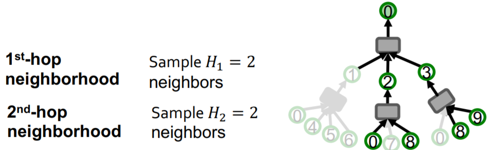
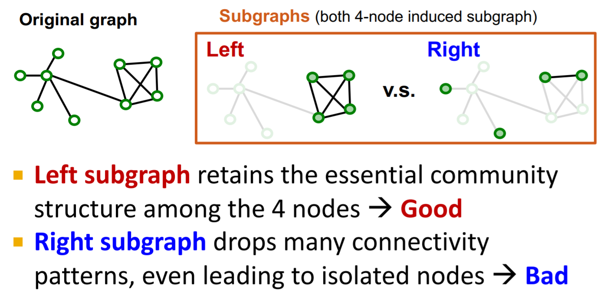
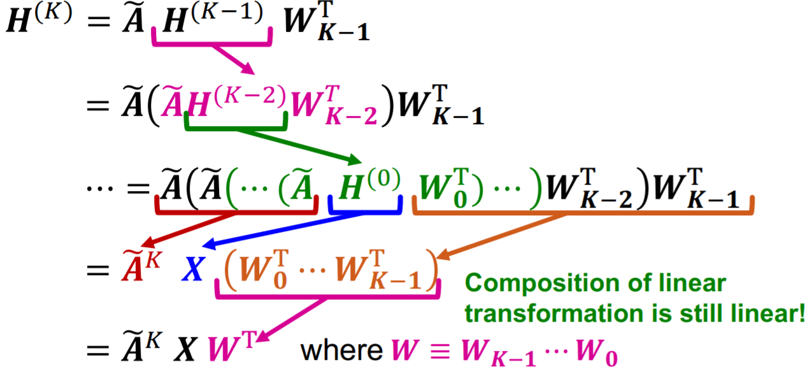

在大规模数据上训练机器模型时，我们通常会采用随机梯度下降法，但是对于图数据来说，采样一个mini-batch得到的基本都是互相孤立的点，是无法用于GNN的训练的，在这一节我们将介绍如何用GNN处理大规模的图任务。
本文主要参考资料为CS224W的Lecture 17，课程视频可在Youtube观看。
GraphSAGE Neighbor Sampling
对于一个k层的GNN，图中某节点的embedding只取决于其k阶邻居结构及对应的特征。对于一个包含M个节点的mini-batch，我们只需要这M个节点对应的计算图即可。根据这些计算图计算mini-batch中节点的embedding，就可以用随机梯度下降的方法来更新模型了。
但是这样的方法计算复杂度比较高，因为随着k的增大，涉及到的节点是指数级增长的；另外，遇到度特别高的节点时也会使涉及到的节点数迅速增加。
为了解决上述问题，我们采用邻居采样的方法，即每个节点最多只会保留一定数目的邻居节点在计算图中

但是采样的邻居节点数不能过少，如果采样数过少会使聚合过程不稳定，有较大的variance。并且随机采样会采样到很多不重要的节点，因为现实中的图都会包含很多度较低的叶子节点。因此，可以采用之前学过的带重启的随机游走对节点的邻居节点进行一个重要性的打分，再根据分数进行采样以获得更好的效果。
另外即使采用了采样的方法，计算图的增长速度依然是随k指数增长的，因此对于深层的GNN计算图仍然是很大的。
Cluster-GCN
上面介绍的采样法是存在很多冗余计算的，因为很多邻居都是由不同节点共享的。对于full-batch GNN来说，每一层只需要计算两倍的边的数量的信息，因此GNN的计算复杂度对边数和层数应该是线性的。
Cluster-GCN提出对原图采样子图，在子图上进行计算，来消除冗余计算。
那么该采样什么样的子图呢？对于GNN来说，消息传递是通过边来进行的，因此我们希望子图尽可能的保留原图边的连接性

实际的图通常是有群体结构的，因此可以采样不同的群体作为子图，这也是Cluster-GCN的思想。
Cluster-GCN的问题有以下几点：1.移除了不同群体间的边，忽略了不同群体间的消息传递；2.GraphSAGE的采样方法能够学到全图上多样化的结构，而Cluster-GCN只能学习到局部集中的结构；3.不同的group计算的梯度会有比较高的variance，会造成SGD的收敛较慢。
为了解决上述问题，我们可以将原图分为更小的group，在每个mini-batch中采样多个group。通过这样的方法，就能够保留不同群体间的消息传递，并且每个mini-batch更加多样化，不同的mini-batch计算的梯度的variance也会比较小。
Cluster-GCN的计算复杂度是比Neighbor Sampling低的，特别是对于大规模图，但是其产生的梯度是biased的，并且即使GCN的层数很深，Cluster-GCN也只能在采样的子图内计算，而无法真正从原图更高阶的邻居聚合信息。
Simplified GCN
我们可以通过移除非线性激活函数来简化GCN，即降低模型的表示能力来获取更快的训练速度

其中$\widetilde{\boldsymbol{X}}=\widetilde{\boldsymbol{A}}^{K} \boldsymbol{X}$是可以预先计算好的，简化后的GCN模型即$\boldsymbol{H}^{(K)}=\widetilde{\boldsymbol{X}} \boldsymbol{W}^{\mathrm{T}}$，可以看到其只是对一个预先计算好的矩阵进行了一些线性变换。
虽然这个模型比较简单，但其在半监督节点分类任务上也取得了不错的效果。预先计算的$\widetilde{\boldsymbol{X}}$其实是不断对邻居节点的特征取平均，因此预先计算的特征对于相邻接点是相近的，对于相邻节点趋于有相似标签的任务来说Simplified GCN的表现会比较好。
本课程就到此结束啦！后面都是guest lecture了，应该不会写笔记了，后续会找时间再把Colab写完。